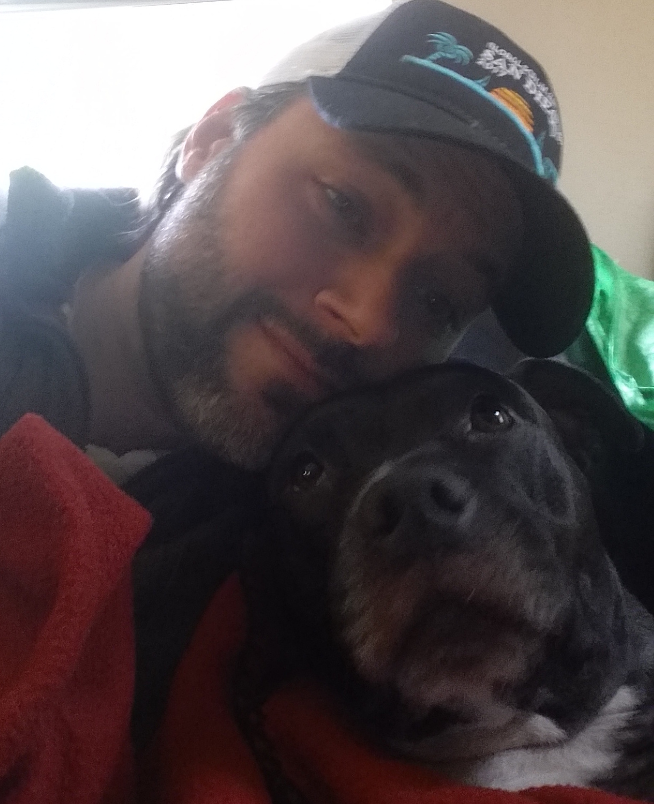

About Me
I am a full stack developer with a business and social science background. I spend my days as a Scrum Master and my nights working with HTML, CSS, and JavaScript. I am a recovering Project Manager with over 7 years in the industry, 3 of which utilized agile frameworks and methods. I have a humanistic value centered approach to software development. I will work with you to provide a foundation of working software to your early adopters and partner with you to identify and implement valuable feedback driven features that align with your business goals.
When I am not developing software or at a JavaScript meetup you will most likely find me playing a tabletop game of some kind. I am an avid tabletop gamer, both board games and RPGs, and involved in the tabletop community.